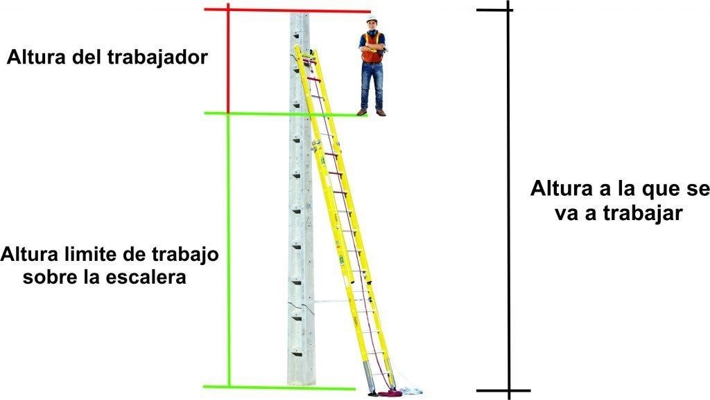

Curso Uso de Escalera Manual
Normativa La calidad de vida del hombre común depende en buena parte de la calidad de los productos que consume No siempre se encuentra en condiciones de evaluar la calidad de éstos y en consecuencia se ve precisado a confiar en la palabra de quien se lo ofrece cuando no existe una certificación que la avale. Así funciona el mercado y es por ello que el Estado consideró y considera que es necesario garantizar al público usuario la calidad de aquellos productos donde - dado sus características especiales y su seguridad - pueden evitar o atenuar el impacto de los riesgos de la tarea que realiza y con ese fin resolvió establecer la certificación obligatoria de los mismos.
- • Ex S.I.C.YM Resolución No 896/99 - Requisitos esenciales que deberán cumplir los equipos, medios y elementos de protección personal comercializados en el país. Esta Resolución busca garantizar a los trabajadores de cualquier proceso productivo o de servicios, la seguridad en la utilización de equipos, medios y elementos de protección personal conducentes a reducir la siniestralidad laboral, bajo condiciones previsibles y normales de uso. Los fabricantes, importadores, distribuidores, mayoristas y minoristas de los productos alcanzados por la presente Resolución, están obligados a certificar o exigir la certificación según el caso, del cumplimiento de los requisitos esenciales de seguridad que se detallan en la misma, mediante una certificación de producto por marca de conformidad (o por Lote a partir de la Resolución 197/2004), otorgada por un organismo de certificación y ensayada en un laboratorio reconocido por la Dirección Nacional de Comercio Interior.
- Resolución SRT 299/2011 – Adóptanse las reglamentaciones que procuren la provisión de elementos de protección personal confiables a los trabajadores Para su cumplimentación se crea el formulario “Constancia de Entrega de Ropa de Trabajo y Elementos de Protección Personal”. Dicho formulario es de utilización obligatoria por parte de los empleadores y se debe completar un formulario por cada trabajador, en el que se registrarán las respectivas entregas de ropa de trabajo y elementos de protección personal, así como la indicación de si los mismos cuentan o no con Certificación.
Ley N° 19.587 / Decreto N° 351/79 – Anexo I TITULO VI: PROTECCIÓN PERSONAL DEL TRABAJADOR, CAPITULO XIX EQUIPOS Y ELEMENTOS DE PROTECCIÓN PERSONAL estipula en su articulado que todo empleador debe adoptar y poner en práctica las medidas adecuadas de Higiene y Seguridad para proteger la vida y la integridad de los trabajadores, especialmente en lo relativo al suministro y mantenimiento de los equipos de protección personal CONSEJOS DE SEGURIDAD
- Revise la escalera antes de su uso, buscando: o Peldaños flojos, travesaños u otras partes deterioradas o rotas. o Pérdida de elementos de seguridad (antiapertura, antideslizante…).
- Utilice escaleras certificadas UNE-EN 131.
- Ubique la escalera en una superficieplana y segura.
- Use tablas amplias debajo, si la escalera se utiliza en una superficie blanda.
- Coloque los pies de la base de la escalera paralelamente al soporte de la parte superior.
- Enganche la parte superior de la escalera.
- Mantenga tres peldaños de la escalera por encima del borde de apoyo superior.
- Limpie sus zapatos antes de subirse a la escalera
- Póngase de frente a la escalera cuando esté subiendo o bajando.
- Mantenga siempre 3 puntos de apoyo con la escalera.
- Agarre la escalera con una mano, mientras esté trabajando.
- Use cinturón portaherramientas para usar la escalera, cuidando que no pueda provocarle un punzamiento.
- Mantenga su peso centrado entre los peldaños de la escalera, no salga de la vertical.
- No use la escalera como andamio; no están diseñadas para ese propósito.
- En una escalera sólo puede estar una persona a la vez.
- Levante la escalera de extensión antes de extenderla. Asegúrese de que las dos secciones se sobreponen suficientemente entre ellas.
- Las escaleras metálicas y la electricidad no se deben mezclar. Aléjese de líneas eléctricas. Evite contactos indirectos.
- No ubique la parte inferior de la escalera muy lejos del muro.
- No sobrecargue la escalera.
Para elegir el tamaño de tu escalera, también tenemos que tomar en cuenta, nunca utilizar el último peldaño de la escalera para pararnos, se recomienda dejar siempre 3 peldaños libres en la parte superior de la escalera y en base a esto, calcular el tamaño de la escalera considerando que la persona no puede utilizarla hasta los últimos peldaños.
Estas escaleras en sus modelos más altos pueden llegar a tener un tamaño considerable de varios metros, por lo que para su manipulación, transporte y sobre todo posicionamiento, se recomienda siempre considerar 2 personas.
Esta proporción nos ayudara a mantener un ángulo de inclinación aceptable aproximado de 75° siempre, lo cual le brinda a la escalera una estabilidad apropiada.
Evita que la escalera, entre en contacto con los conductores de electricidad.
Tener en cuenta que se entiende se utiliza una sola escalera por trabajador,} está prohibido utilizar una escalera portátil con más de una persona en la escalera simultáneamente.
NOTA: Esta regla refiere a personas posicionadas en la escalera encima de cualquier parte de ella, otra persona debe sujetarla abajo, para evitar que se caiga o deslice mientras su compañero sube la escalera, pero esta persona de apoyo, debe estar con los pies en el suelo, nunca sobre la escalera, recuerda que por más que las patas anti deslizantes son obligatorias en la escalera, siempre hay la posibilidad de que se deslice.
NOTA: En caso de tener que utilizar la escalera telescópica o simple como plataforma de trabajo, a la medida de lo posible debe estar anclada o arriostrada a la estructura que se va a trabajar, para que quede estable y no pueda moverse hacia los lados perdiendo estabilidad, recuerda también que debemos prever el equipo de protección contra caídas al superar la altura considerada de trabajos en altura.
Felicitaciones completaste el curso de "@nombre-del-curso"
Ahora para comprobar lo aprendido podes completar este formulario obligatorio